|
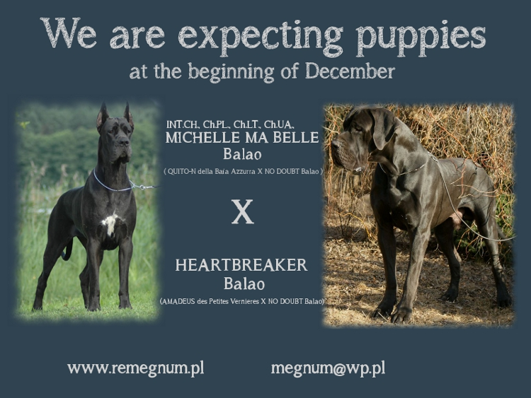 01.12.2012
- in REMEGNUM kennel first pups out of HEARTBREAKER were born :)
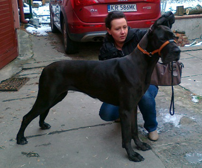 30.11.2012
- GOOD DAY SUNSHINE now is living with Teresa, Robert and Int.Ch. LOVE
STORY Balao :)
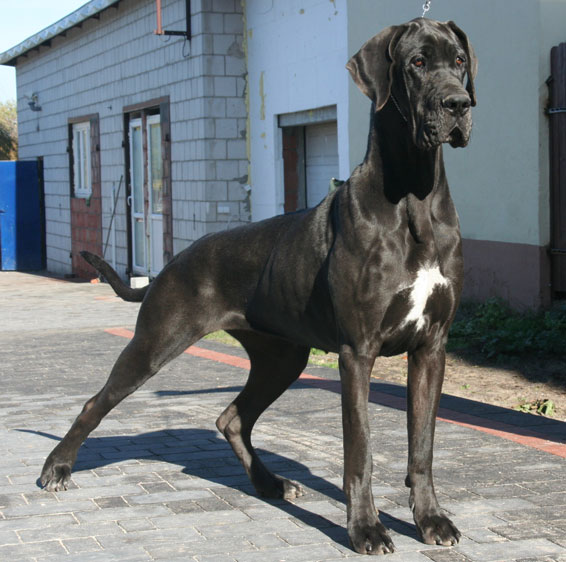 25.11.2012
- National dog show in Bydgoszcz - GOOD DAY SUNSHINE Balao on her
debut show was amazing - CAC, BOS, BOB, BOG ! Two weeks before this show
she come back to our kennel ...
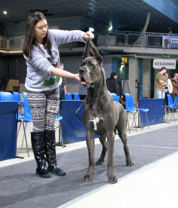 11.11.2012
- International dog show in Kielce - GOLDEN BOY Balao - JCAC,
Junior Winner, Best Junior, BOB, new Polish Junior Champion
GANGSTA'S PARADISE Balao - CAC, CACIB, BOB, II BOG
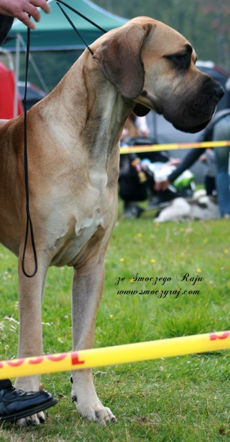 28.10.2012
- National dog show in Czêstochowa - GOLDEN BOY Balao - JCAC,
Junior Winner, Best Junior
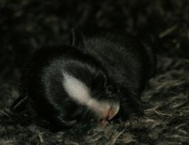 11.09.2012 -
Next pup in our home REQUIEM FOR A DREAM Balao - french bulldog
M: Ch.Md., Ch. Bg., Grand
Ch.Bg NOIR NOTE Balao
F: PIOTRUΠPAN z Nadarzyna
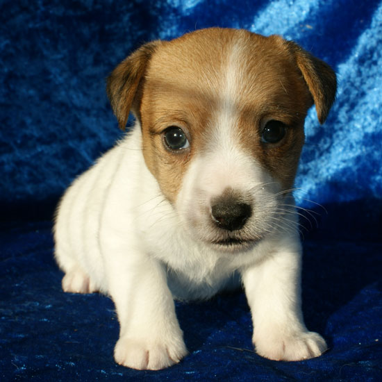 09.09.2012
- Six lovely pups out of FOR YOU BALAO Magor and Multi.Ch.
FIRST FLASH z Jerene. This is second "C" JRT's litter in our kennel
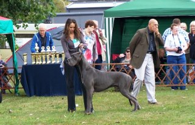 09.09.2012
- EuDDC show in £ódŸ - GANGSTA'S PARADISE Balao won his class and
gained EuDDC Junior Winner title
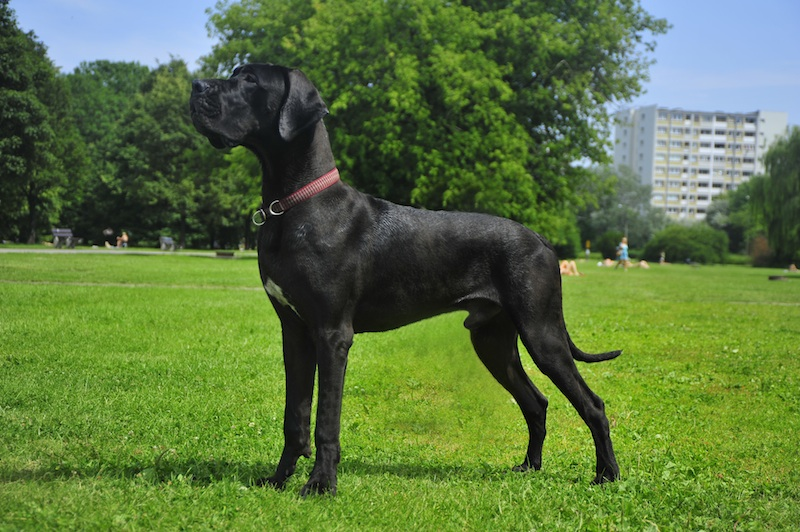 08.06.2012
- International dog show in Senec (Slovakia) - GUNS N' ROSES Balao - JCAC,
Junior Winner, Best Junior
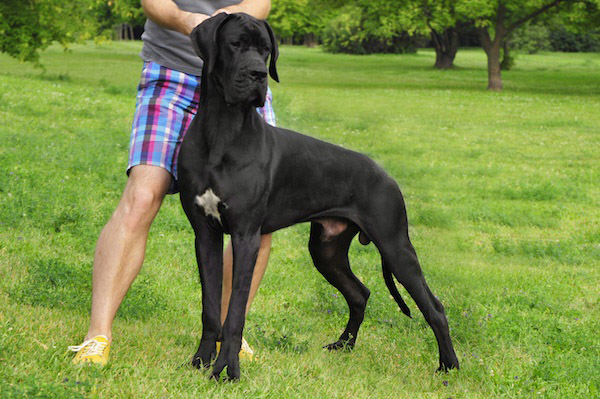 27.05.2012
- National dog show in P³ock - GUNS N' ROSES Balao - JCAC, he is new
Polish Junior Champion. Today he also finished 10 months. Very nice gift
on his "birthday".
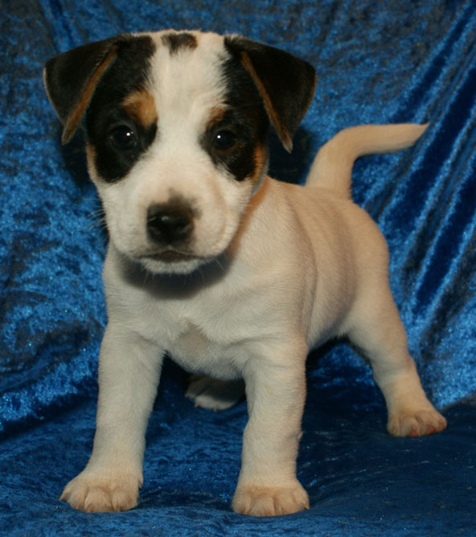 10.05.2012 -
Inter & Multi Champion FOR PLEASURE of th Hunters Pride.
become a father of "B" Balao litter
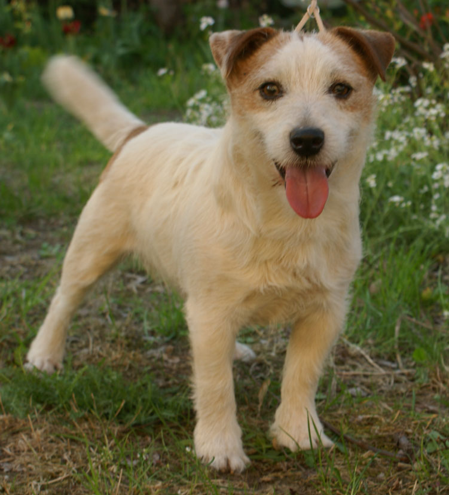 05.05.2012
- International dog show in £ódŸ - FOR PLEASURE of the HUNTERS PRIDE
again BEST VETERAN
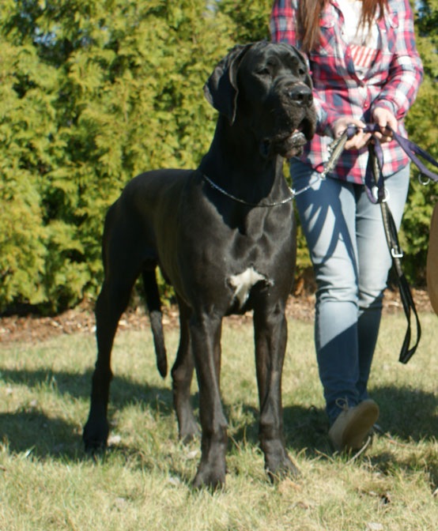 01.05.2012
- National dog show in Dobre Miasto - GUNS N' ROSES Bala - JCAC,
Junior Winner, Best Junior
28.04.2012
- International dog show in Opole -
GUNS N' ROSES Balao - , JCAC, Junior Winner title , Best Junior
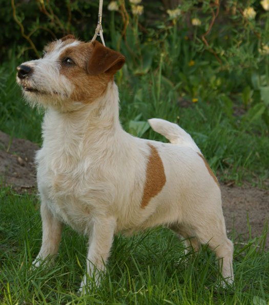 31.03.2012
- National dog show in
Nowy Dwór Mazowiecki - FOR YOU
BALAO Magor got last CAC needed to finish CH.PL. Her father FOR PLEASURE of the HUNTERS PRIDE
had his debut in veteran class and gained BEST VETERAN title
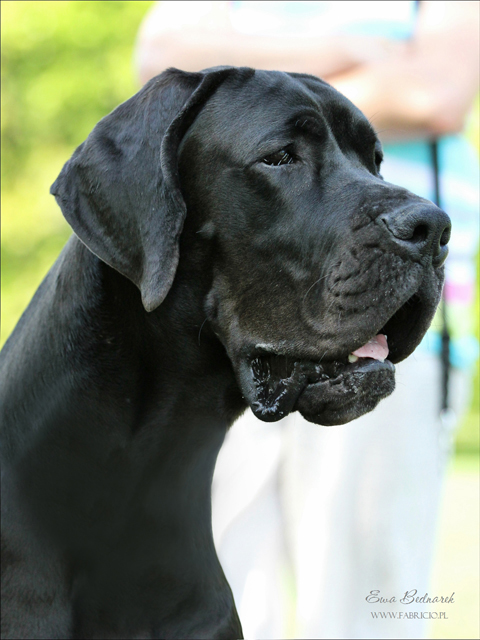
03.03.2012 - National dog show
in Drzonków - GUNS N' ROSES Balao - Best Puppy
11.02.2012 - National dog
show in Bydgoszcz -
GUNS N' ROSES Balao - Best Puppy
 11.02.2012
- International dog show in Rzeszow - others show's success : HEARTBREAKER Balao - CAC, CACIB 11.02.2012
- International dog show in Rzeszow - others show's success : HEARTBREAKER Balao - CAC, CACIB
MICHELLE MA BELLE Balao - CAC, CACIB
JAROD Balao - CAC, CACIB, BOB
LOVE STORY Balao - R.CACIB
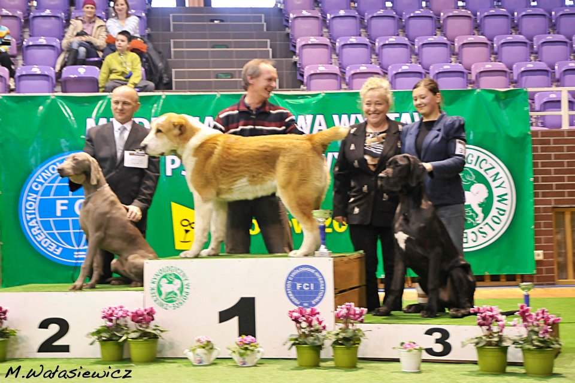 27.01.2012
- International dog show in G³ogów
JAROD Balao - CAC, CACIB, BOB
GUNS N' ROSES Balao - BEST PUPPY, III BEST PUPPY
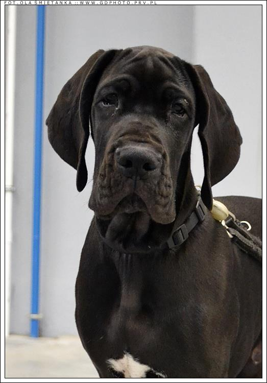 15
- 16.01.2012 - National dog show in
Gdask. Young Jack Russellka
TIME FOR PLEASURE Balao - on her first show got Junior Winner title
and the youngest great dane
GUNS N' ROSES - BEST BABY
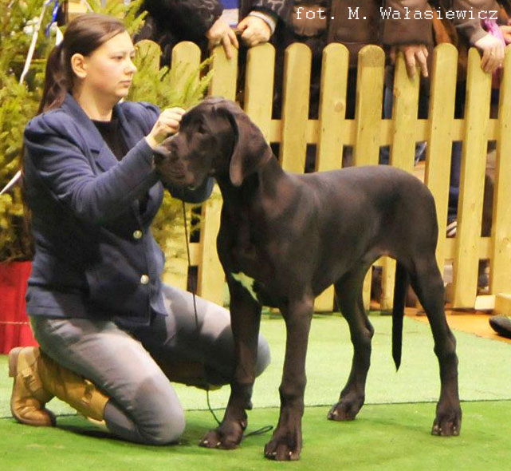 06.01.2012
- National dog show in
Kalisz
GUNS N' ROSES Balao - BEST BABY
|